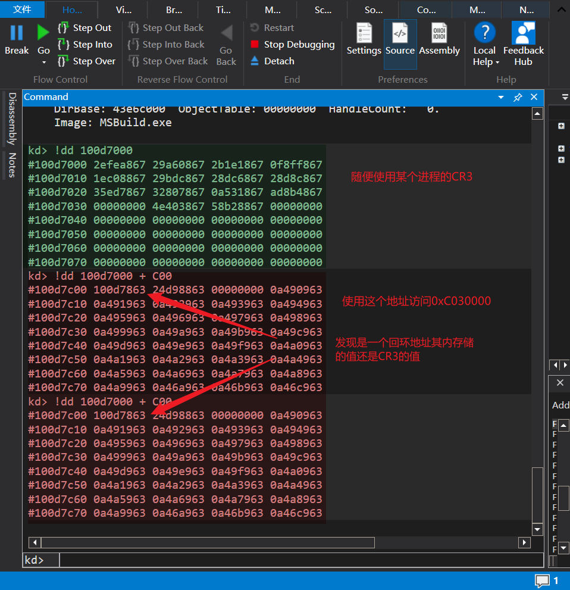
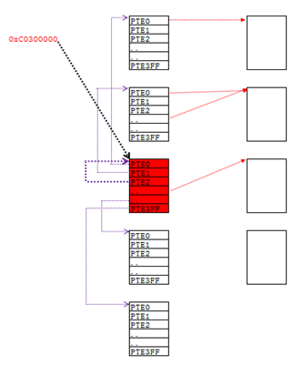
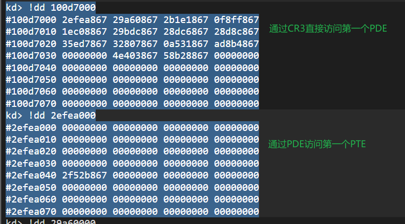
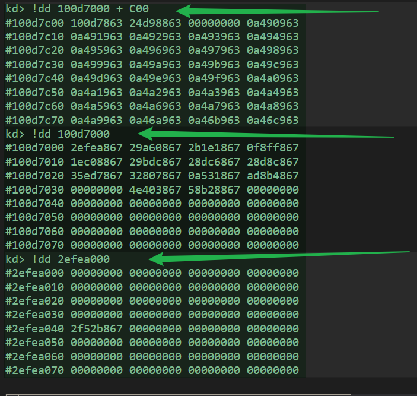
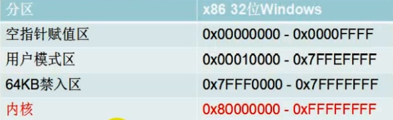
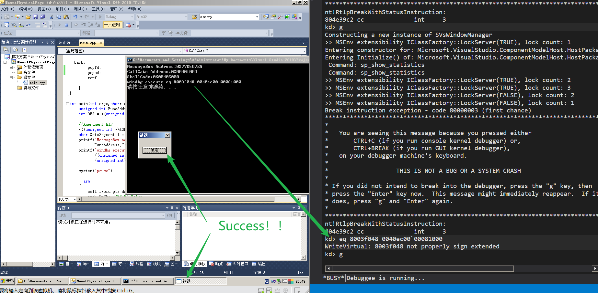

# 楔子
如果我们想填充 PDE 与 PTE，那么必须能够访问 PDT 与 PTT，这样就存在 2 个问题：
- 一定已经有 “人” 为我们访问 PDT 与 PTT 挂好了 PDE 与 PTE, 我们只用找到这个线性地址就可以了
- 这个为我们挂好 PDE 与 PTE 的 “人” 是谁？
注意：
CR3 中存储的是物理地址，不能在程序中直接读取的。如果想读取，也要把 Cr3 的值挂到 PDT 和 PTT 中才能访问，那么怎么通过线性地址访问 PDT 和 PTT 呢？
# 页目录表基址
页目录表基址 = 线性地址： C0300000
# 实验：拆分线性地址 C0300000，并查看其对应的物理页
随便使用某个程序的 CR3，访问线性地址 C0300000 的物理地址。

可以发现 C0300000 的物理页内容与 PDT 表完全相同。
实验总结
- 线性地址 C0300000 对应的物理页就是页目录表
- 这个物理页即页目录表本身也是页表
- 这个物理页是一张特殊的页表，每一项 PTE 指向的不是普通的物理页，而是指向其它的页表
- 访问页目录表的公式：C0300000 + PDI*4（I=index）
页目录表基址 (XP 系统 10-10-12 分页模式)

# 页表基址
页表基址 = 线性地址： C0000000
# 实验：拆分线性地址 C0000000，并查看其对应的物理页
随便使用某个程序的 CR3，访问线性地址 C0000000 的物理地址。
查看第一个 PTE

可以发现 PTE 完全一样。

因为微软与新特尔协商，CR3 的值 + 0xC00 的的地址处存放的值还是 CR3 的值。所以访问线性地址 C0000000 就是找第一个 PTE 的地址。
实验总结
- 页表被映射到了从 0xC0000000~0xC03FFFFF 的 4M 地址空间
- 在这 1024 个表中有一张特殊的表：页目录表，是第 0x300 张表。
- 页目录被映射到了 0xC0300000 开始处的 4K 地址空间
- 访问页表的公式：0xC0000000 + PDI*4096 + PTI*4（I=index）
再看一遍这个图
# 总结
有了 0xC0300000 和 0xC0000000 能做什么：
掌握了这两个地址，就掌握了一个进程所有的物理内存读写权限
公式总结：
- 访问页目录表的公式：C0300000 + PDI*4（I=index）
- 访问页表的公式：0xC0000000 + PDI*4096 + PTI*4（I=index）
# 实践
理论知道了开始实践。
# 在 0 地址执行 ShellCode
所需知识：
- 内联汇编
- 硬编码
- CPU 提权
- 10-10-12 页表基址
除了自己构造调用门描述符外，其他都代码实现。
实际用途：火哥说的是写保护…… 小白也不懂，有些检测并不检测空指针赋值区和 64K 禁入区。

// 在 0 地址挂载物理页并执行 ShellCode | |
#include<stdio.h> | |
#include<Windows.h> | |
char ShellCode[] = { | |
0x6a, 0, | |
0x6a, 0, | |
0x6a, 0, | |
0x6a, 0, | |
0xe8, 0, 0, 0, 0, | |
0xc3}; | |
void __declspec(naked) CallGate(){ | |
__asm | |
{ | |
push 0x30; | |
pop fs; | |
pushad; | |
pushfd; | |
lea eax,ShellCode; | |
mov ebx,dword ptr ds:[0xc0300000]; | |
test ebx,ebx; | |
je __gpPDE; | |
shr eax,12; | |
and eax,0xfffff; | |
shl eax,2; | |
add eax, 0xc0000000; | |
mov eax,[eax]; | |
mov dword ptr ds:[0xc0000000],eax; | |
jmp __back; | |
__gpPDE: | |
shr eax,22; | |
and eax,0x3ff; | |
shl eax,2; | |
add eax,0xc0300000; | |
mov eax,[eax]; | |
mov dword ptr ds:[0xc0300000],eax; | |
__back: | |
popfd; | |
popad; | |
retf; | |
}; | |
} | |
int main(int argc,char* argv[]){ | |
unsigned int FuncAddress = (unsigned int)MessageBox; | |
int OFA = ((unsigned int)ShellCode) & 0xfff; | |
//Amendment EIP | |
*((unsigned int *)&ShellCode[9]) = FuncAddress - (13 + OFA); | |
char GateSegment[] = {0,0,0,0,0x48,0}; | |
printf("MessageBox Address:%#010X\nCallGate Address:%#010X\nShellCode:%#010X\n", | |
FuncAddress,CallGate,ShellCode); | |
printf("windbg execute eq 8003f048 %04xec00`0008%04x\n", | |
((unsigned int)CallGate>>0x10) & 0xffff, | |
(unsigned int)CallGate & 0xffff); | |
system("pause"); | |
__asm | |
{ | |
call fword ptr ds:[GateSegment]; | |
push 0x3b; //R3 FS Value | |
pop fs; | |
mov eax,OFA; | |
call eax; | |
}; | |
system("pause"); | |
return 0; | |
} |
成功！这个例子只是抛砖引玉，更多的还是需要自身区专研。

# Reference
滴水中级课程
https://blog.csdn.net/qq_41988448/article/details/102652776